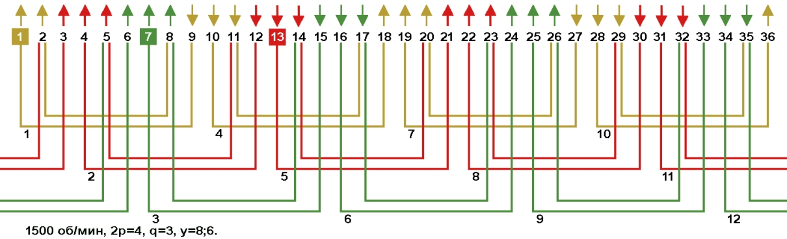
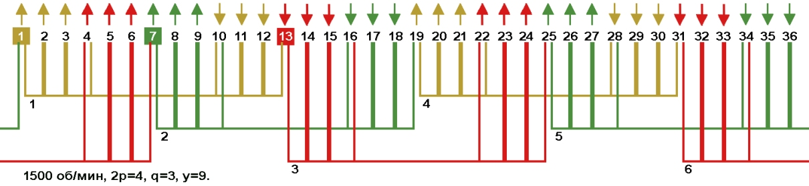
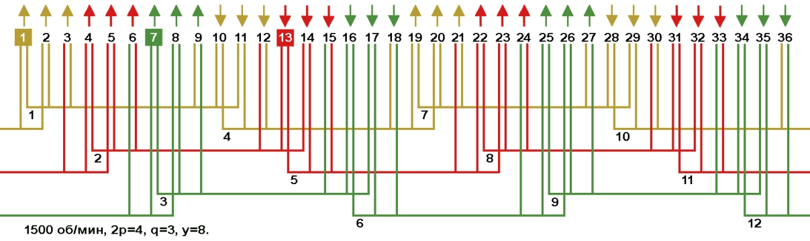
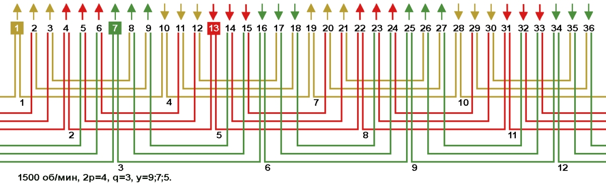
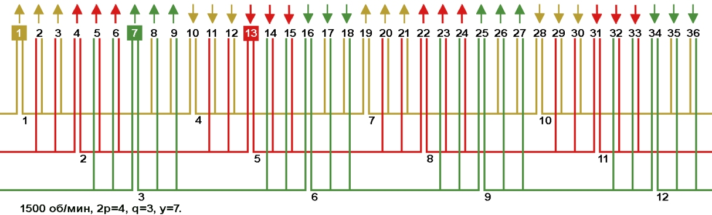
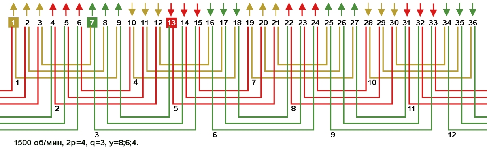
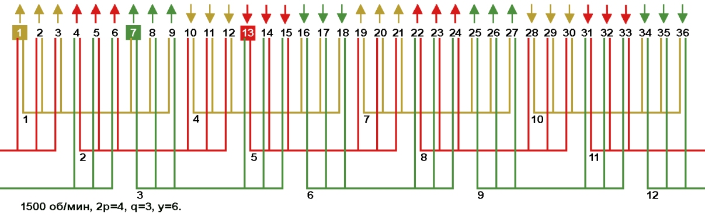
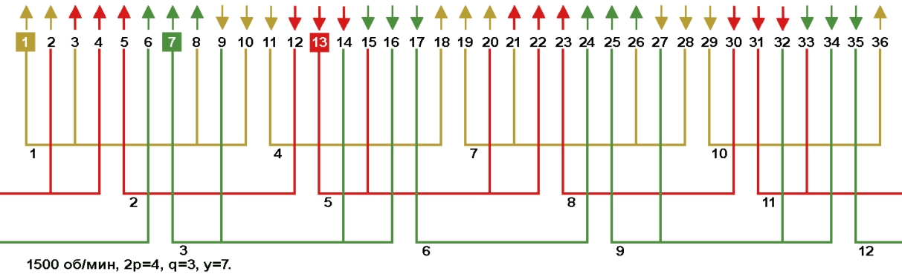

Перейти на главную страницу справочника.
Одно-двухслойные, двухслойные и цепные обмотки с несплошной фазной зоной в электродвигателях 1500 об/мин, Z1=36.
- Так как недостатком обмоток со сплошной фазной зоной являются большие потери в стали сердечника, вызванные несинусоидальностью МДС в воздушном зазоре, то для приближения кривой магнитного потока к синусоиде применяют одно-двухслойные обмотки с расширенной фазной зоной, двухслойные обмотки с укороченным шагом и цепные однослойные обмотки с укороченным шагом.
Все эти обмотки расширяют фазную зону, поэтому стороны катушек одной фазы перемещаются в фазную зону соседней фазы.
Обмотки, в которых некоторые стороны катушек размещаются на фазных зонах соседних фаз, называются обмотками с несплошной фазной зоной.
Обмотки с несплошной фазной зоной с расширением на один паз.
- На Рис. 1 схема укладки концентрической обмотки вразвалку с расширенной фазной зоной. Средний шаг по пазам укороченный (рекомендуемый). Визуально фазные зоны сдвинуты в лево.
Для определения числа пазов на которое выполнено расширение фазной зоны для данной схемы, достаточно обратить внимание на фазную зону первой фазы в пазах 9, 10, 11 (катушки жёлтого цвета). Стрелки над этими пазами указывают на размер сплошной фазной зоны и составляет три паза 9, 10, 11. В пазу 8 находится правая сторона малой секции от катушки №1. Фазная зона расширилась до четырёх пазов 8, 9, 10, 11 (катушки жёлтого цвета). Точно так же определяется расширение фазной зоны и на других рисунках.
Рис. 1 
{kind=link}
- На Рис. 2 схема укладки равносекционной обмотки с расширенной фазной зоной. Средний шаг по пазам диаметральный.
Рис. 2 
{kind=link}
- На Рис. 3 схема укладки равносекционной двухслойной обмотки. Средний шаг по пазам укороченный (рекомендуемый).
Рис. 3 
{kind=link}
- Так как у обмоток на Рис. 1, 2 и 3 несплошная фазная зона с расширением на один паз, то и характеристики у этих обмоток будут одинаковые. Потребуется пересчёт обмоточных данных при переходе с одной схемы укладки на другую.
- Для сохранения наилучших характеристик электродвигателя с обмоткой с несплошной фазной зоной, схему укладки выбираем с минимальным вылетом лобовых частей и с равносекционными катушками Рис. 3. Соединение фаз в звезду.
Литература:
(Недостатки концентрических обмоток) Электрические машины, автор А.И. Вольдек, 1978, стр. 417, 418.
(Соединение фаз) Обмотки электрических машин. Авторы: В.И. Зимин, М.Я. Каплан, А.М. Палей, И.Н. Рабинович, В.П. Фёдоров, П.А. Хаккен, 1970, стр. 98, 99.
Обмотки с несплошной фазной зоной с расширением в два паза.
- На Рис. 4 схема укладки концентрической двухслойной обмотки. Средний шаг по пазам укороченный (рекомендуемый).
Рис. 4 
{kind=link}
- На Рис. 5 схема укладки равносекционной двухслойной обмотки. Средний шаг по пазам укороченный (рекомендуемый).
Рис. 5 
{kind=link}
- Так как у обмоток на Рис. 4 и 5 несплошная фазная зона с расширением в два паза, то и характеристики у этих обмоток будут одинаковые. Пересчёт обмоточных данных при переходе с одной схемы на другую не требуется.
- Для сохранения наилучших характеристик электродвигателя в обмотке с несплошной фазной зоной, схему укладки выбираем с минимальным вылетом лобовых частей и с равносекционными катушками Рис. 5. Соединение фаз в звезду.
Обмотки с несплошной фазной зоной с расширением в три паза.
- На Рис. 6 схема укладки концентрической двухслойной обмотки. Средний шаг по пазам укороченный.
Рис. 6 
{kind=link}
- На Рис. 7 схема укладки равносекционной двухслойной обмотки. Средний шаг по пазам укороченный.
Рис. 7 
{kind=link}
- Так как у обмоток на Рис. 6 и 7 несплошная фазная зона с расширением в три паза, то и характеристики у этих обмоток будут одинаковые. Пересчёт обмоточных данных при переходе с одной схемы на другую не требуется.
- Для сохранения наилучших характеристик электродвигателя в обмотке с несплошной фазной зоной, схему укладки выбираем с минимальным вылетом лобовых частей и с равносекционными катушками Рис. 7. Соединение фаз в звезду.
- Какая обмотка из рассмотренных выше имеет лучшие характеристики, с расширением фазной зоны на один паз, на два паза или на три паза?
Чем больше число пазов расширяющих фазную зону, тем ближе кривая магнитного потока к синусоиде, но чрезмерное увеличение числа пазов расширяющих фазную зону ведёт к ухудшению КПД, поэтому придерживаемся рекомендаций производителей электродвигателей.
Рекомендованные производителем схемы на Рис. 1, 3, 4 и 5, но схемы на Рис. 6 и 7 так же встречаются в обмотках импортных двигателей.
Для нахождения числа пазов расширяющих фазную зону рекомендованных производителем, нужно число пазов на полюс и фазу разделить на 2:
Цепные обмотки с несплошной фазной зоной в электродвигателях 1500 об/мин, Z1=36.
- На Рис. 8 схема укладки равносекционной цепной однослойной обмотки.
Рис. 8 
{kind=link}
- При нечётном числе пазов на полюс и фазу (а в данном двигателе q=3) цепная обмотка даёт несинусоидальное магнитное поле и увеличивает потери в сердечнике статора. В справочниках указывают, что применение данной схемы необходимо избегать, но данная схема укладки выручает обмотчика, когда лобовая часть однослойной заводской обмотки очень маленькая. При переходе с однослойной обмотки на цепную с шагом у=7 потребуется пересчёт обмоточных данных, рекомендуемое число параллельных ветвей а=2. Данная схема укладки относится к обмоткам с несплошной фазной зоной с расширением на один паз.
28.03.2019 г.